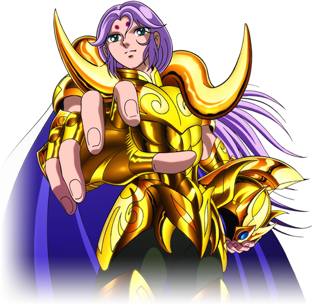

Coordinador de proyectos con mas de 6 años de experiencia trabajando con diferentes metodologias como SCRUM y PMP.
Educación
-
Ingeniero de Sistemas con enfasis en administración e informatica
-
2011 - Universidad Icesi
-
Maestria en Innovación
-
2019 - Universidad Icesi

Experiencia Profesional
-
Coordinador de proyectos T.I (Acad).
-
2014 - Actualidad - Universidad Icesi
-
Coordinador de Servicios Académicos
-
Agosto de 2005 al 2007 - Universidad Icesi
Premios
-
Cuadro de honor
-
2002 - 2 - Universidad Icesi
-
Cuadro de honor
-
2006 - 2 - Universidad Icesi
Otros
- Seminario en desarrollo Profesional - Universidad Icesi - 2005-2
- Día Informático - Universidad Icesi - 2007-1